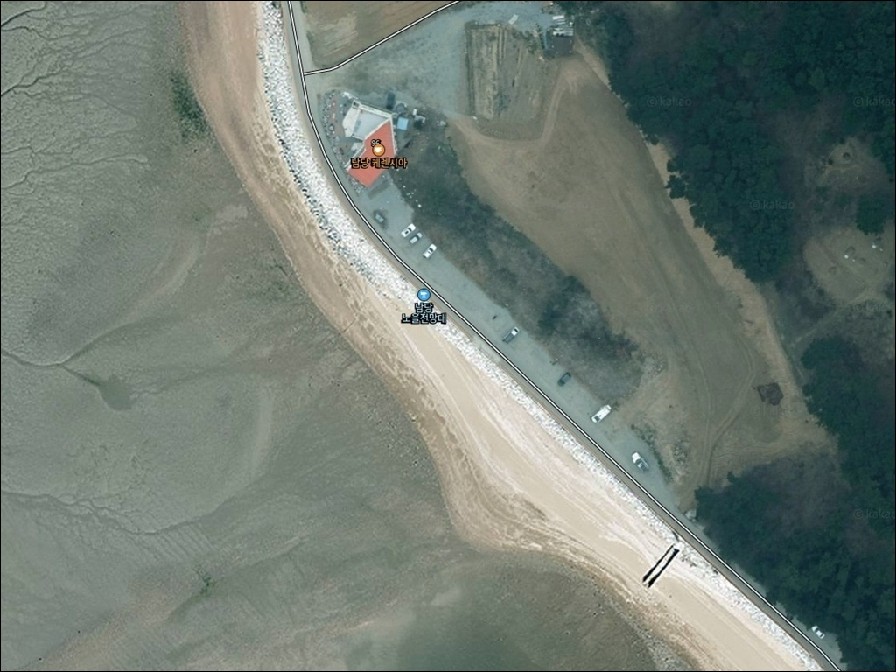
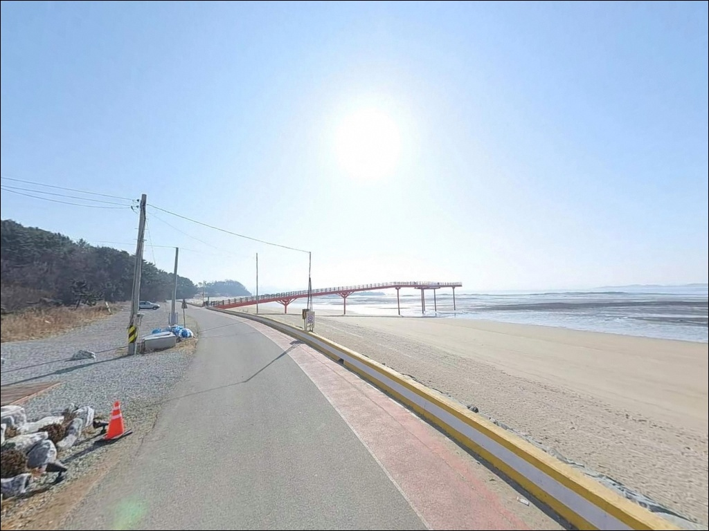
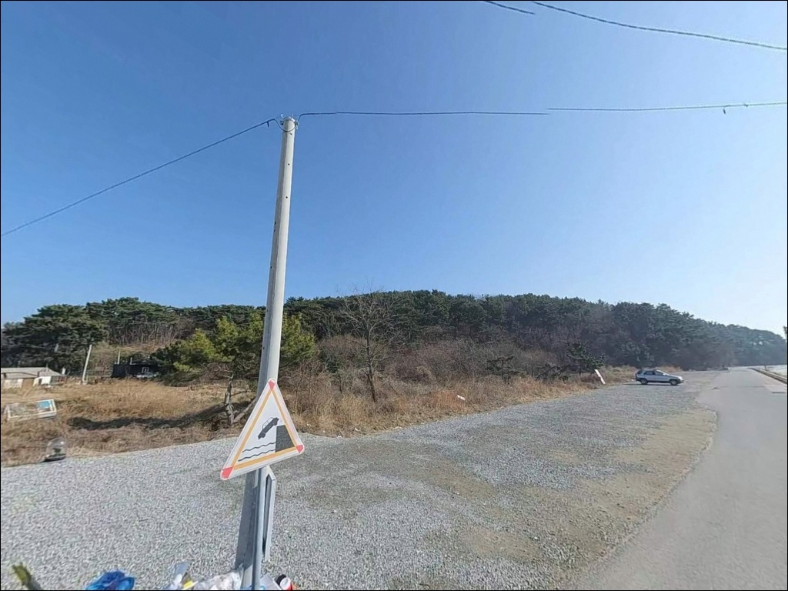
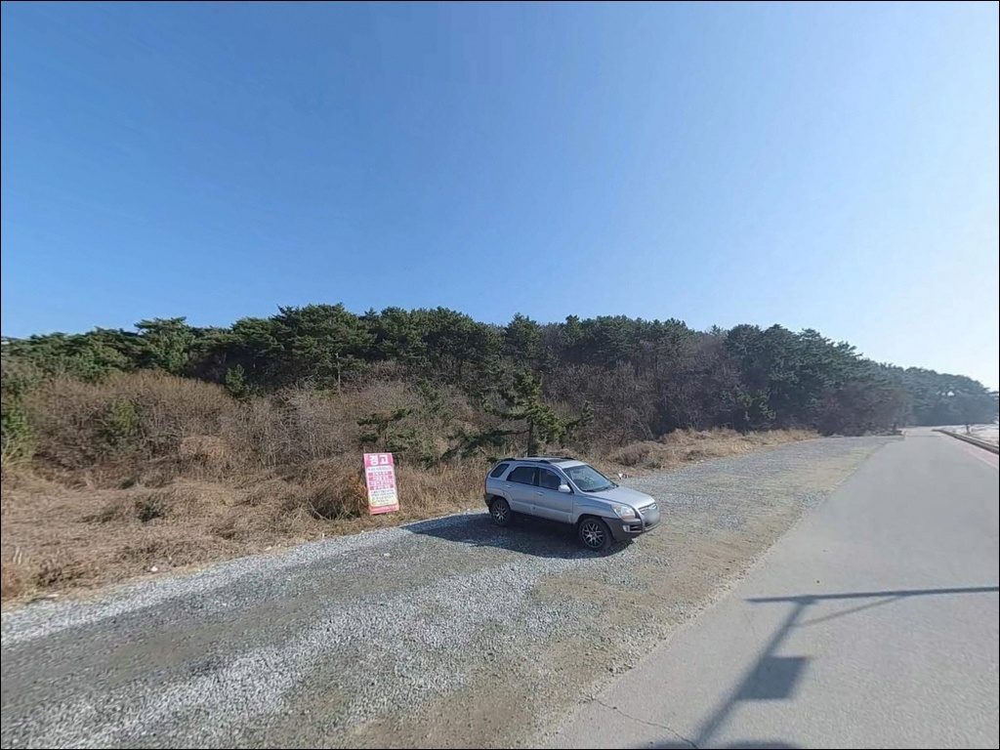
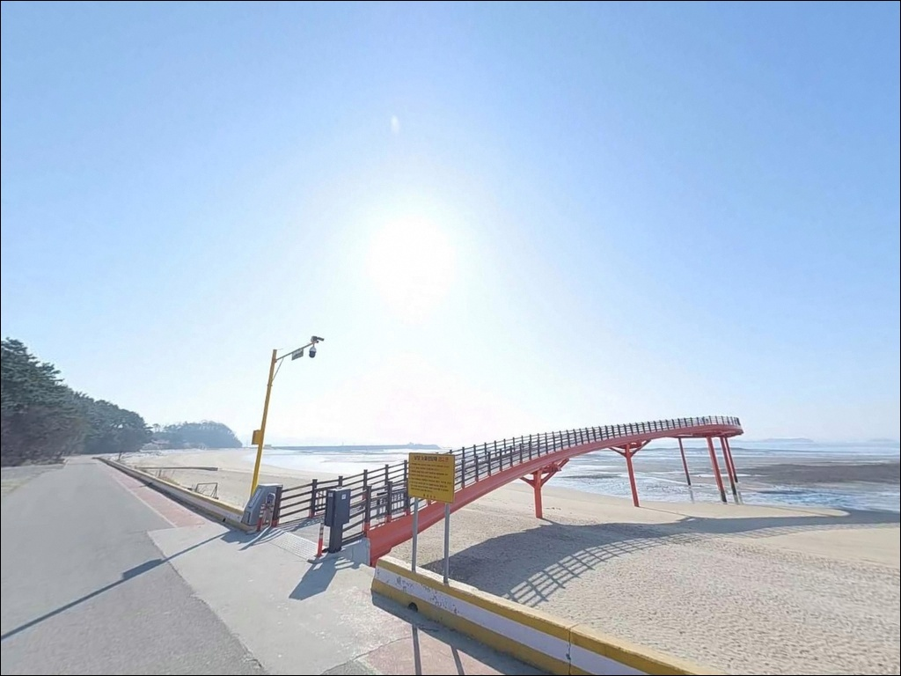
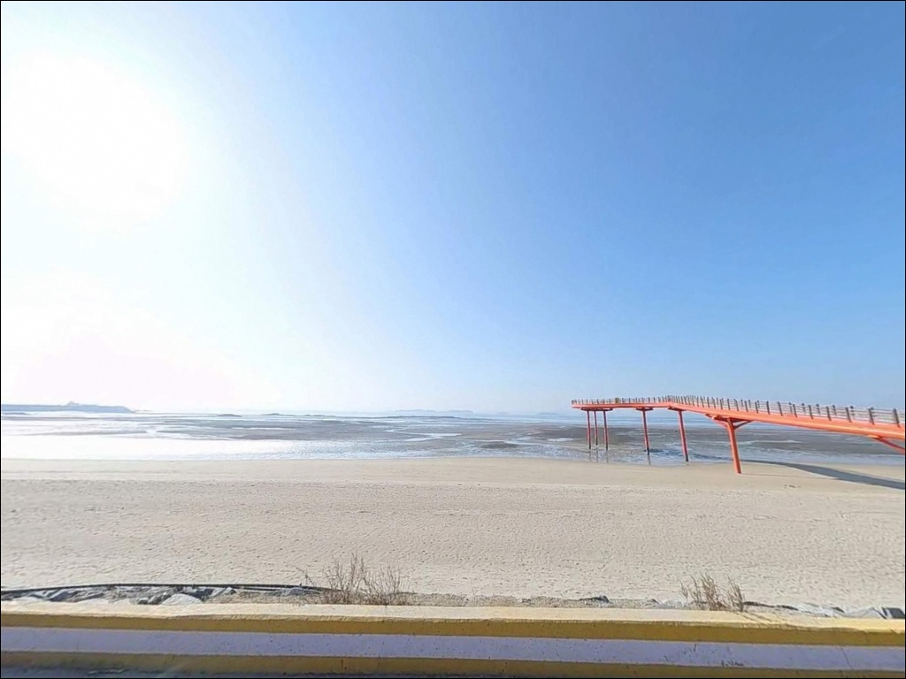
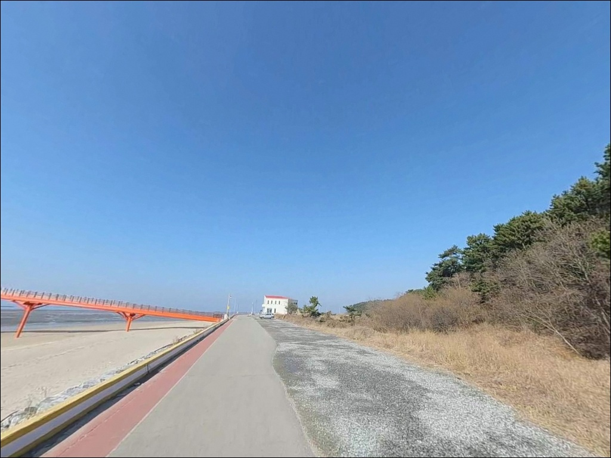
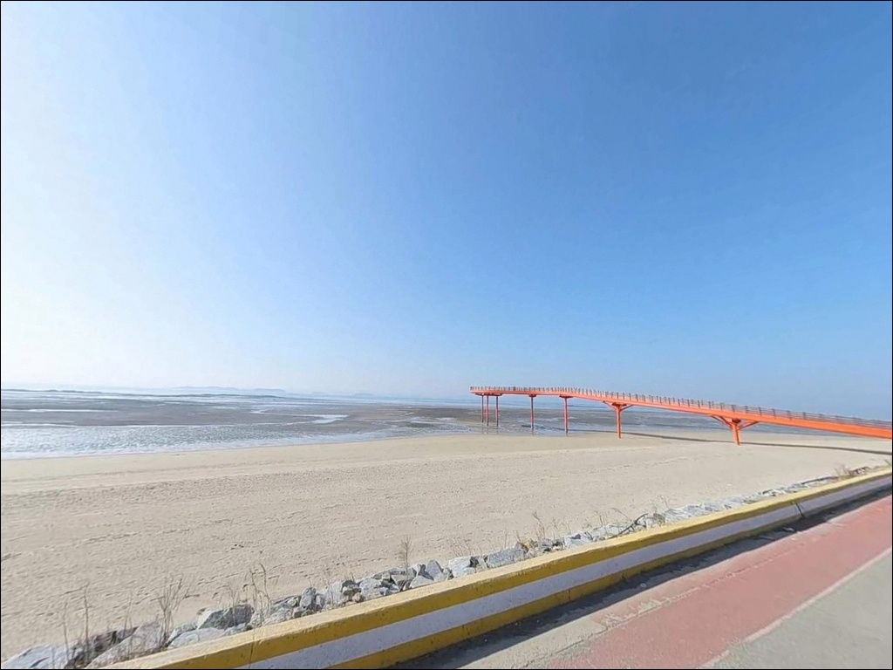
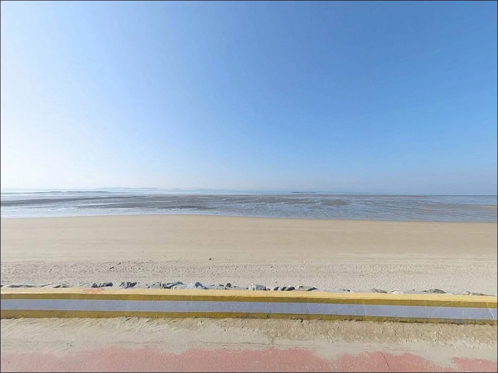

남당노을전망대, 충남 홍성군 노을 감성 차박, 낚시 포인트
이 페이지에는 광고(제휴 링크 포함)가 있으며, 광고 링크를 통해 구매하면 운영자가 판매 수익 또는 수수료를 받을 수 있습니다. 포인트 사진: 카카오맵 스카이뷰·로드뷰. 이 페이지의 지도·사진 이미지는 카카오맵의 실제 서비스 이미지와 다를 수 있습니다.


포인트 안내
남당노을전망대
충남 홍성군 서부면 남당리 767-18
남당노을전망대를 낚시 포인트로 검색하고 찾아갔다가
막막해지는 경우가 있습니다.
전망대 데크 구조물 자체는 관광 시설이며,
실제 낚시는 바로 옆 남당항 방파제와
인접 해변에서 이루어지는 구조이기 때문입니다.
이 자리를 모르고 전망대 위에만 서 있다가
돌아오는 경우가 초행에서 흔히 발생합니다.
충남 홍성군 서부면 남당리,
천수만 해변 위로 약 102m 뻗어나간 S자형 해상 전망 구조물입니다.
일몰 명소이자 관광 동선의 거점이며,
남당항(국가어항)이 바로 인접해 있어
낚시와 차박을 연계하는 기점으로 활용할 수 있는 자리입니다.
이 글은 남당노을전망대 일원의
진입 여건, 차박 환경, 인접 낚시 자리 조건을 중심으로 정리합니다.
전망대 구조물 위에서의 낚시 허용 여부나
조황 단정은 이 글의 범위에 포함되지 않습니다.

1. 진입 동선과 주차 여건
남당노을전망대는 남당항로를 따라
자연스럽게 접근하는 구조입니다.
주요 진입로는 포장 상태가 양호하며
급경사나 비포장 구간 없이
일반 승용차부터 SUV까지 무난히 들어올 수 있습니다.
캠핑카·대형 차량 진입 후기도 있는 만큼
회차 여건은 비교적 넉넉한 편입니다.
주차는 전망대 바로 앞 공영 주차공간과
남당항 공영주차장을 이용하는 방식이 기본입니다.
전망대 인근 무료 주차는
한국관광공사 공식 등재 기준으로 확인됩니다.
남당항 역시 국가어항 시설로
주차 인프라는 이 일대에서 가장 안정적인 편입니다.
관광지 특성상 주말 낮에는 방문객 차량이 집중됩니다.
낚시 출조 목적이라면
해 뜨기 전 이른 도착이
주차와 낚시 자리 모두 유리합니다.

2. 전망대 인근 차박 체류 환경
남당노을전망대 일원은 관광지이자 항구 마을입니다.
완전히 조용한 노지형 차박지와는 성격이 다릅니다.
야간에는 전망대 조명과 항구 일대 가로등이 있어
밝은 편의 환경이 형성되며,
낮에는 관광객 유입이 있고
밤이 되면 눈에 띄게 한적해지는 구조입니다.
차에서 하룻밤 머무는 용도로 접근한다면
전망대 바로 앞보다
남당항 공영주차장 쪽이 더 넓고
동선 확보에 유리한 편입니다.
공영주차장 내 야영·취사는
관련 법규 개정 이후 허용 여부가 달라질 수 있으므로
방문 전 홍성군 현행 운영 방침 확인이 먼저입니다.
천수만 특성상 바람이 강한 날은
외항 방향으로 노출이 있습니다.
바람 세기와 방향을 당일 기상예보에서 확인하고
주차 자리를 그에 맞게 선택하는 것이
밤 동안 체류 질을 결정합니다.


3. 주변 편의시설 및 인프라 현황
남당항 일대는 충남 서해안에서
편의시설이 비교적 잘 갖춰진 항구 중 하나입니다.
전망대에서 도보 이동 거리 안에
횟집과 수산물 식당이 밀집해 있고,
관광 상권이 형성되어 있어
식사·간식 해결이 무난한 편입니다.
낚시 소품은 출발 전에 갖추고 오는 편이 안전합니다.
얼음·식수·비상약품은
현장 도착 전 완비 상태로 준비하는 것이 기본입니다.
부족한 생필품은 서부면 방향으로 이동해 해결할 수 있습니다.
남당항 인근에 선상낚시 출항지가 있어
도보 낚시가 여의치 않을 경우
선상 출조로 전환하는 옵션이 가까운 거리에 있습니다.
주꾸미·갑오징어 선상 출조가 이 항구에서 운영되며,
출발 전 예약 여부를 확인하는 것이 좋습니다.

4. 물때를 모르면 갯벌 앞에서 낚시가 성립하지 않는 이유
이 포인트 방문 전에 가장 먼저 확인할 것은
물때입니다.
천수만은 서해 내만 특성상 조수간만의 차가 크고,
간조 시에는 전망대 주변 갯벌이 넓게 드러납니다.
물때를 맞추지 않으면 채비를 던질 수 있는 수면 자체가
멀어져 낚시가 성립하지 않습니다.
만조 전후 2~3시간이 이 일대 낚시의 핵심 타이밍입니다.
물때는 바다타임에서 남당항 기준으로 미리 확인하고
입장 시각을 맞춰 출발하는 것이 기본 전략입니다.
조류가 살아 있는 구간이
원투낚시와 루어 반응이 함께 올라오는 타이밍이기도 합니다.
기상 변화도 빠른 편입니다.
출발 당일 아침 기상청 예보를 다시 확인하고,
풍속이 강하거나 파고가 있는 날은
방파제 끝단 접근을 자제하는 판단이 필요합니다.
방파제 특성상 바닥 걸림도 있는 편이라
여분 채비는 넉넉히 준비하는 편이 좋습니다.

5. 지형 기반 낚시 여건 분석
남당노을전망대 일대의 핵심 지형은
천수만 내만의 갯벌·모래 혼합형 해변입니다.
전망대 아래로는 간조 시 갯벌이 넓게 드러나고
만조 전후에는 수면이 해변 가까이까지 차오르는
전형적인 서해 조간대 구조입니다.
원투낚시에 어울리는 완만한 바닥 경사가
이 일대 해변의 기본 특성입니다.
실질적인 낚시 자리는 남당항 방파제 구간입니다.
방파제 외항 방면은 천수만 조류를 직접 받는 구간으로,
루어와 원투 방식 모두 운용이 가능한 조건을 갖추고 있습니다.
항 입구 수로 쪽에서는
수심 변화가 비교적 뚜렷한 구간이 형성되어
조류 흐름을 활용하는 낚시 자리가 만들어집니다.
이런 지형 구조에서 기대해 볼 수 있는 어종은
우럭, 광어, 갑오징어, 주꾸미 등
서해 내만 계절성 어종이 중심입니다.
가을에서 초겨울까지 활동이 활발한 편으로 알려진 해역입니다.
출조 전에 남당항 조황을 검색해 보시기 바랍니다.


6. 이 일대에 어울리는 낚시 스타일
원투낚시가 이 포인트의 지형 조건과 가장 잘 맞는 방식입니다.
갯벌·모래 혼합형 바닥에 완만한 수심 경사는
원거리 캐스팅 후 바닥을 탐색하는 방식에 어울리는 구조입니다.
만조 전후 수면이 올라오는 타이밍에
해변에서 멀리 던지는 방식이 기본 접근입니다.
가을 시즌 주꾸미·갑오징어 에깅은
남당항 방파제 외항 쪽을 중심으로 운용합니다.
서해 천수만 권역은 가을 두족류 시즌이 잘 형성되는 해역이며,
야간에는 조명이 있는 방파제 구간에서
에깅 운용 효율이 올라오는 편입니다.
방파제 끝단과 수로 입구 구간이 에깅 자리로 유리한 조건입니다.
루어낚시도 방파제 외항 방면에서 시도해볼 만합니다.
항 입구 수로 구간은 조류가 집중되는 자리라
루어 반응이 살아나는 타이밍이 생깁니다.
조류 방향과 물때를 맞춰
항 입구 쪽으로 흘리는 방식이 이 포인트에 어울립니다.

7. 대안 포인트와 플랜 B 동선
남당노을전망대 주변이 여의치 않거나
낚시 자리 선택 폭을 늘리고 싶다면
속동해안공원이 가장 가까운 대안입니다.
홍성군 서부면 같은 해안선에 위치하며,
천수만 차박·낚시 루트로 함께 묶이는 자리입니다.
이 일대 서해안 차박 콘텐츠에서 반복적으로 언급되는 포인트입니다.
어사리항도 같은 해안선에 속한 대안 포인트입니다.
소형 포구 구조로 인파가 적은 편이며,
낚시 목적이 메인이고 차박은 보조인 방문자라면
남당노을전망대보다
집중하기 좋은 환경이 됩니다.
수룡항 포구도 인근 대안으로 거론되는 곳입니다.
같은 서부면 해안선 범위에 있어
이동 동선이 크게 벗어나지 않습니다.
남당항 출발 기준으로
속동→어사리→수룡 방향 순서로 탐색하는 동선이
이 권역에서 낚시 자리를 폭넓게 보는 방법입니다.

남당항 낚시는 물때와
자리 이해에서 시작됩니다
원투낚시나 가을 에깅을 즐기는 낚시인이라면
남당노을전망대를 기점으로 한 남당항 방파제는
서해 천수만 권역에서 접근성이 좋은 자리입니다.
편의시설 인프라도 이 권역 안에서 양호한 편이라
첫 방문에 부담이 적습니다.
반면 전망대 위에서 낚시 자리를 찾거나
물때 없이 간조 시간에 도착하면
갯벌만 넓게 드러난 해변 앞에서
채비 세팅 자체가 어렵습니다.
물때 확인, 방파제 자리 구분, 여분 채비 준비,
이 세 가지가 이 포인트 방문의 사전 조건입니다.
조용한 노지 차박지를 원하는 방문자에게는
인근 어사리항이나 속동해안공원이 더 맞는 선택입니다.
남당항 일원은 낚시 후 시설 편의성을 활용하며
하룻밤 머무는 실용적인 거점으로,
천수만 서해안 낚시 여정을 마무리하기 좋은 자리입니다.